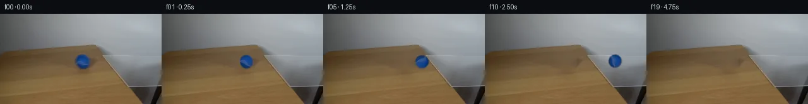

![首帧]()

Round 00
2026-11-04T21:06:35.600234+00:00像素候选变化代码 +207/−0inspection 更新
pixels 1286b52fa861ab0c · code 28821274d2073c7e
查看本轮 generate.py 真实 diff
--- previous/generate.py
+++ current/generate.py
@@ -0,0 +1,207 @@
+#!/usr/bin/env python3
+"""Generate the 20-frame locked-camera ball-on-glass continuation."""
+
+from pathlib import Path
+
+import cv2
+import numpy as np
+from PIL import Image, ImageDraw, ImageFont
+
+from artifact_io import save
+
+
+ROOT = Path(__file__).resolve().parent
+W, H = 256, 144
+BALL_X0, BALL_Y0 = 131.0, 76.0
+
+
+def source_and_clean_plate():
+ """Return the source and a source-derived plate with the original ball removed."""
+ source = np.asarray(Image.open(ROOT / "first_frame.png").convert("RGB"))
+ assert source.shape == (H, W, 3)
+
+ # Mask the blue sphere and its very small tabletop contact shadow. The
+ # surrounding wood pixels supply both colour and grain to OpenCV's local
+ # inpaint; nothing outside the supplied first frame is introduced.
+ mask = np.zeros((H, W), np.uint8)
+ cv2.circle(mask, (131, 76), 14, 255, -1, lineType=cv2.LINE_AA)
+ cv2.ellipse(mask, (132, 87), (16, 5), 0, 0, 360, 255, -1, lineType=cv2.LINE_AA)
+ clean_bgr = cv2.inpaint(cv2.cvtColor(source, cv2.COLOR_RGB2BGR), mask, 5, cv2.INPAINT_TELEA)
+ clean = cv2.cvtColor(clean_bgr, cv2.COLOR_BGR2RGB)
+ return source, clean
+
+
+def extract_ball(source, clean):
+ """Extract a softly antialiased source ball sprite around the measured center."""
+ half = 15
+ x0, y0 = int(BALL_X0) - half, int(BALL_Y0) - half
+ rgb = source[y0:y0 + 2 * half + 1, x0:x0 + 2 * half + 1].astype(np.float32)
+ yy, xx = np.mgrid[-half:half + 1, -half:half + 1].astype(np.float32)
+ radius = np.sqrt(xx * xx + yy * yy)
+
+ # Geometry supplies the clean silhouette; the colour-distance term keeps
+ # the antialiasing faithful at the original blue boundary.
+ original_bg = clean[y0:y0 + 2 * half + 1, x0:x0 + 2 * half + 1].astype(np.float32)
+ colour_distance = np.linalg.norm(rgb - original_bg, axis=2)
+ circle_alpha = np.clip((11.6 - radius) / 1.6, 0.0, 1.0)
+ edge_confidence = np.clip((colour_distance - 3.0) / 14.0, 0.0, 1.0)
+ alpha = circle_alpha * np.maximum(edge_confidence, (radius < 9.4).astype(np.float32))
+ alpha = cv2.GaussianBlur(alpha, (3, 3), 0.45)
+ return rgb, np.clip(alpha, 0.0, 1.0)
+
+
+def transform_sprite(rgb, alpha, angle_degrees, scale):
+ """Rotate about the sphere center and apply the small perspective scaling."""
+ size = rgb.shape[0]
+ center = ((size - 1) / 2.0, (size - 1) / 2.0)
+ matrix = cv2.getRotationMatrix2D(center, angle_degrees, scale)
+ rotated_rgb = cv2.warpAffine(
+ rgb, matrix, (size, size), flags=cv2.INTER_CUBIC,
+ borderMode=cv2.BORDER_REFLECT_101,
+ )
+ rotated_alpha = cv2.warpAffine(
+ alpha, matrix, (size, size), flags=cv2.INTER_CUBIC,
+ borderMode=cv2.BORDER_CONSTANT, borderValue=0,
+ )
+ return rotated_rgb, np.clip(rotated_alpha, 0.0, 1.0)
+
+
+def soft_ellipse_layer(cx, cy, rx, ry, opacity, shape=(H, W)):
+ """Create a subpixel soft elliptical opacity field."""
+ yy, xx = np.mgrid[0:shape[0], 0:shape[1]].astype(np.float32)
+ dist = ((xx - cx) / rx) ** 2 + ((yy - cy) / ry) ** 2
+ core = np.clip(1.0 - dist, 0.0, 1.0)
+ return (core ** 1.7) * opacity
+
+
+def alpha_colour(frame, layer_alpha, colour):
+ a = layer_alpha[..., None].astype(np.float32)
+ return frame * (1.0 - a) + np.asarray(colour, np.float32) * a
+
+
+def composite_ball(frame, sprite_rgb, sprite_alpha, cx, cy, distance, glass_mix):
+ """Add physically separate shadow, glass reflection and rolling ball."""
+ result = frame.astype(np.float32)
+
+ # The tabletop shadow is warm and diffuse. Across the glass it becomes
+ # weaker, smaller, and cooler because the transparent sheet transmits most
… diff truncated; 120 more lines …